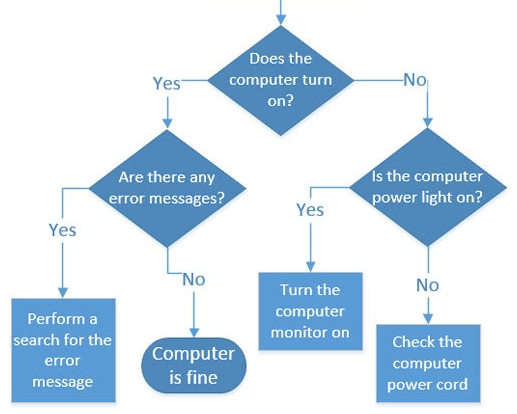
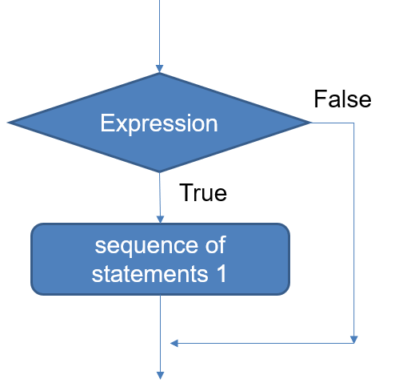
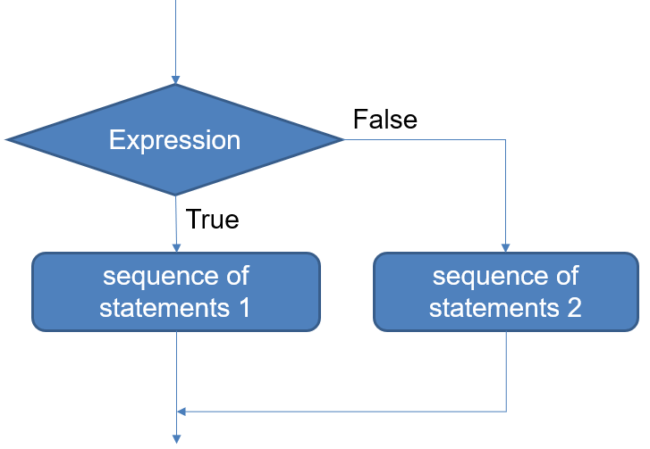

x=1
if expression:
# statements executed if expression is true
# statements following the if expression (execute independently of expression being true or false)01-07-24 (Wednesday)
VERSE 1:
We bring our time, we bring our treasure,
we lay them down before Your throne.
You will make them something greater,
more than we could ever know. (chorus)
VERSE 2:
We bring our gifts, we bring our power
place them in Your sov’reign hand.
You will take what we have given,
You will use it for Your plan. (chorus)
CHORUS:
Glory be to God, the Maker
glory be to God, Creator
Take our time, use our treasure
turn them into something greater:
Glory be to God, the Maker.
VERSE 3:
Though our hearts are weak from failure,
broken dreams and failed attempts,
show us that in ev’ry season,
You will fill our emptiness. (chorus)
(God the Maker, The Porter’s Gate)
1 If statement
- Until now we have been only looking at a sequential, step-by-step program flow.
- What if we want our code to execute different code given some conditions?

- In Python, an if statement takes the following form:
Attention to indentation: all lines that will be executed if the expression is true must start with a “tab” or 4 whitespaces
Lines of code that are not indented (“inside the if”) just are followed after it is finished

2 If-else statement
- Python also supports a two-way selection statement:
if expression:
# statements if expression is true
else:
# statements if expression is false
3 Multi-way selection
- You can also use the word
elifin case you need to check a condition after other condition isFalse. In this way, we have multiple branches, for more than two alternatives.
if grade >= 90:
print('A')
elif grade >= 80:
print('B')
elif grade >= 70:
print('C')
elif grade >= 60:
print('D')
else:
print('F')4 Nested ifs
- You can also “nest” an if inside another:
if age > 12:
if age < 20:
print('teenager')
else:
print('adult')
else:
print('child')- Note that, in this case, whatever is “inside” the two ifs must be indented twice!
5 Exercises
5.1 Exercise 1: if versus elif
- What is the difference between an
elifand aifjust after anotherif?
x = 4
if x > 3:
print("Greater than 3")
elif x < 5:
print("Less than 5")Greater than 3x = 4
if x > 3:
print("Greater than 3")
if x < 5:
print("Less than 5")Greater than 3
Less than 55.2 Exercise 2
import turtle
t = turtle.Turtle()
choice = input("Choose between square, circle or both: ")
if choice.lower() == "square" or choice.lower() == "both":
turtle.forward(100)
turtle.right(90)
turtle.forward(100)
turtle.right(90)
turtle.forward(100)
turtle.right(90)
turtle.forward(100)
if choice.lower() == "circle" or choice.lower() == "both":
turtle.circle(50)
print("Finished!")- Which code chunks will execute:
- If the user types
square? - If the user types
both? - If the user types
potato?
- If the user types
- Why are we setting
choice.lower()in the comparison?
5.3 Exercise 3
- Identify the code chunks and write its fluxogram (note the nested ifs!)
print("Lamp doesn't work!")
ans = input("Is the lamp plugged in? ")
if ans == "yes":
ans = input("Is the bulb burned out? ")
if ans == "yes":
print("Replace bulb!")
else:
print("Repair lamp!")
else:
print("Plug in lamp!")6 Conditionals are discriminations
Amy Ko reflects on the attempt to generate an algorithm for deciding over administrative issues.
“In 2006, the U.S. state of Indiana began a major digitization initiative to reduce administrative costs of its welfare system through automation.
This information the caseworker reviewed included things like:
- Proof of Indiana residency,
- How many people live in the applicant’s household,
- Whether the household has dependent children less than 18 years of age, and
- The gross earned monthly income of the household in the current or next month.
The case worker:
- was available by phone for questions,
- to resolve any ambiguities in an application, and
- to help explain the state’s eligibility decisions.
The process was not perfect, but the experience of applying for benefits involved interacting with a person who could guide the applicant through the process, fix any misinterpretations by the applicants about how to fill out the form, and address any exceptional circumstances not anticipated by the program, its processes, or the laws that shaped it.
’s digitization efforts sought to automate the application process, having applicants submit data through a website, then having an algorithm use that data to decide whether the applicant was eligible.
The hope was that the algorithm could replicate the caseworker’s eligibility decision, but do it more consistently, more quickly, and more fairly than a case worker could do, and possibly free caseworkers to spend their time handling more complex cases. […]
[However, what happened is that] fewer people were being approved, and residents had less clarity about why they were being denied. The decisions that the algorithm was making were, in general, *less flexible, less explainable, and less transparent than the decisions that caseworkers made**. The result was that Indiana denied more than a million applications for food stamps and other aid, a 54% increase in denials compared to the three years before the automation was launched. From the conservative governor’s standpoint, however, it was a success: the state and federal government had never spent less on food security for its citizens since the program had started.
6.1 Can’t we just refine the logic?
- The algorithm described failed because it couldn’t deal with exceptional cases, personal histories, etc.
- Can’t we just add these exceptions to the logic?
There are reasons to believe this won’t be sufficient.
Automating decision making can also be problematic when it completely stamps out any room for discretion. While human discretion presents its own issues, as described above, it can be useful when it is difficult or impossible to fully specify how decisions should be made in accordance with the goals and principles of the institution. Automation requires that an institution determine in advance all of the criteria that a decision-making scheme will take into account; there is no room to consider the relevance of additional details that might not have been considered or anticipated at the time that the software was developed.
Automated decision-making is thus likely to be much more brittle than decision-making that involves manual review because it limits the opportunity for decision subjects to introduce information into the decision-making process. People are confined to providing evidence that corresponds to a pre-established field in the software. Such constraints can result in absurd situations in which the strict application of decision-making rules leads to outcomes that are directly counter to the goals behind these rules. New evidence that would immediately reverse the assessment of a human decision maker may have no place in automated decision making. For example, in an automated system to assess people with illnesses to determine eligibility for a state-provided caregiver, one field asked if there were any foot problems. An assessor visited a certain person and filled out the field to indicate that they didn’t have any problems — because they were an amputee. - Solon Barocas, Moritz Hardt, Arvind Narayanan, When is automated decision making legitimate?
6.2 The awkward student experiment
Philosopher Ludwig Wittgenstein (1889-1951) wrote: “no course of action could be determined by a rule, because any course of action can be made out to accord with the rule” (Philosophical Investigations §201a). In other words: “rules do not contain the rules for its own application”
Example: the akward student experiment (Harry Collins, “Changing Order”): “given the sequence ‘2, 4, 6, 8’, continue it in the same way.”
“We know how to go on in the ‘same way’ because we share a ‘form of life’. The rightness of ‘10, 12, 14, 16’ as the continuation of ‘2, 4, 6, 8’ resides in its rightness for everyone sharing our culture.” (Harry Collins)
- In a similar way, an algorithm will follow rules in the way we think it should follow rules (i.e., ignoring lots of exceptional situations). But without a shared culture, for understanding context and then how to apply the rule, it will operate almost “blindly”…

6.3 Discussion: programmers encode and standardize intelligence
“The power that algorithms offer is not without consequences. They take processes that we used to be able to see people do and hide them behind code. They take procedures that used to be controlled by every individual who executed them and centralize and standardize this execution in the hands of software developers often in private organizations. And this shift of power, from the collective to developers, had a price: the knowledge those individuals have of what they need is no longer brought to bear on the processes that algorithms automate. Instead, it’s up to those few developers to proactively learn that knowledge and translate it into uniform step-by-step instructions that likely don’t account for the diversity of needs and contexts in the world. The critical question about algorithms, then, is not how to automate something with an algorithm, but whether to and why.” - Amy J. Ko, Critically Conscious Computing
- What are the value judgements when we encode intelligence in algorithms?
- If-else statements are distinction judgments, or in other words, DISCRIMINATIONS. Are these judgments fair? Do they really take what is needed into account?
- As Christians, are we being fair with the diversity and complexity of the world, or are we trying to code everything into simplistic operations just in order to better control life situations?